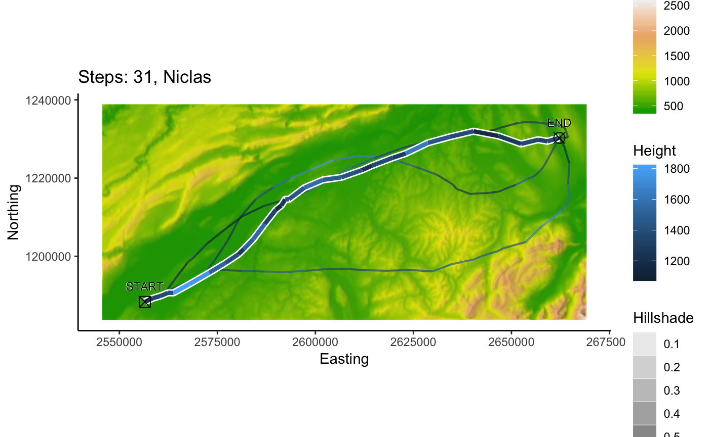
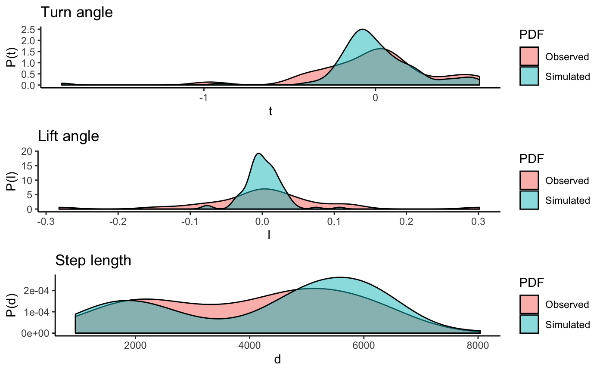

The trajectories can be plotted either in 2-D or in 3-D, using the ggplot2 and plotly libraries. Additionally the densities of the track properties can be visualized.
The plot2d() function takes either one or two arguments. The second argument can be a single track data.frame or list of track data.frames as for example the output of n.sim.cons.3d(). Also a DEM rasterLayer can be passed to the function.

The plot3d() function takes either one or two arguments. The second argument can be a single track data.frame or list of track data.frames as for example the output of n.sim.cons.3d(). Also a DEM rasterLayer, which is plotted as a surface can be passed to the function.
The function takes either one or two tracks. The second track can be a list of tracks as for example the output of n.sim.cons.3d(). In this case the densities of turn angle, lift angle and step length of all the simulations is taken. Additionally the autodifferences parameter can be set to TRUE, then the densities of the auto differences in turn angle, lift angle and step length are visualized.
